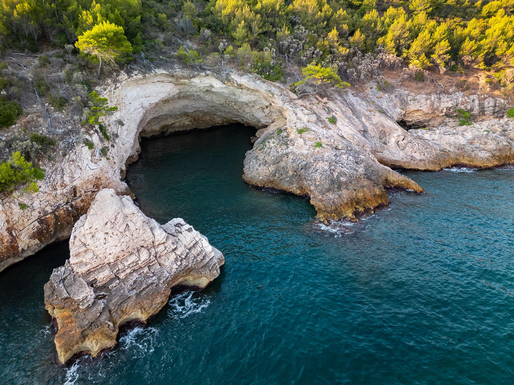
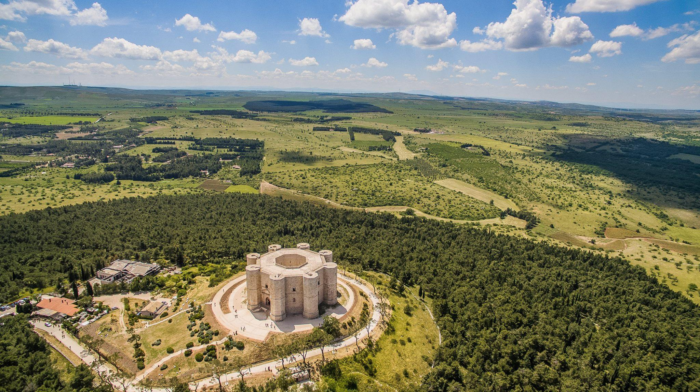
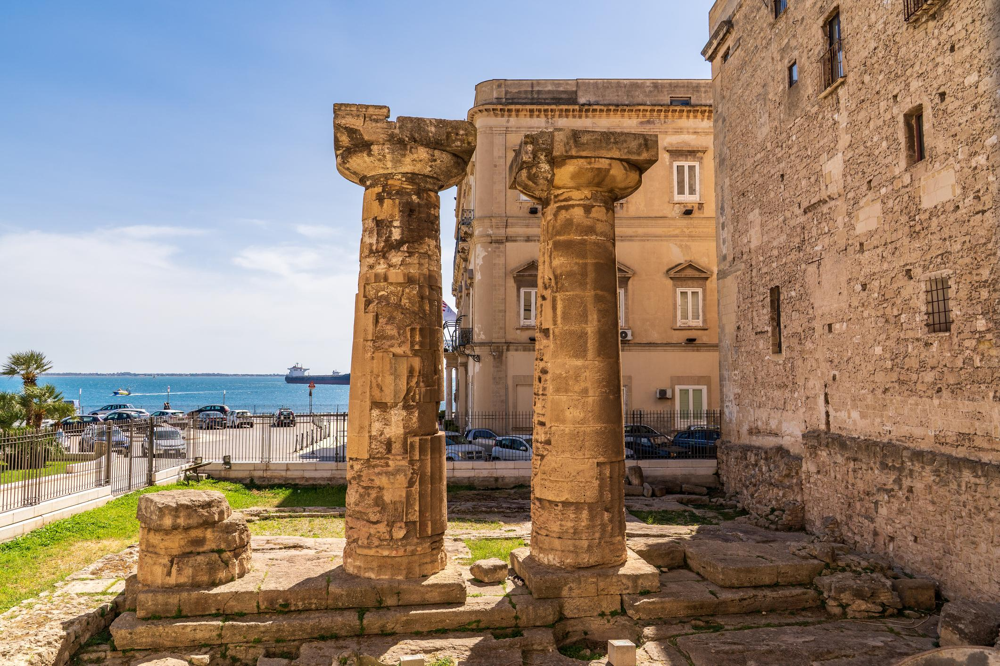
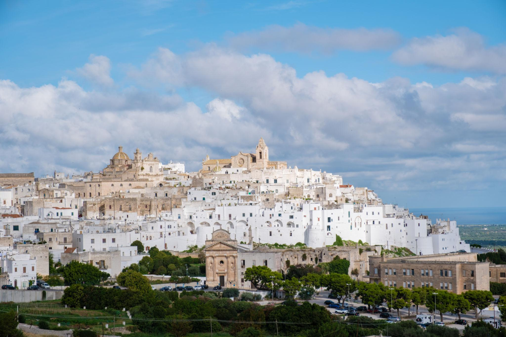

Gargano e Foggia
Lo sperone d'Italia tra scogliere bianche, Foresta Umbra e le mistiche Isole Tremiti.
- Vieste
- Monte Sant'Angelo (UNESCO)
- Isole Tremiti
La Puglia è suddivisa in sei province: Foggia con il Gargano, Bari capoluogo regionale, BAT-Barletta-Andria-Trani, Taranto, Brindisi e Lecce con il Salento. Ogni area ha carattere, paesaggi e sapori del tutto propri: dalla costa adriatica con le sue scogliere bianche fino alla costa ionica con le sue acque caraibiche, dall'entroterra della Murgia ai borghi dell'ulivo.

Lo sperone d'Italia tra scogliere bianche, Foresta Umbra e le mistiche Isole Tremiti.

Il cuore pulsante della Puglia: trulli, grotte di Castellana, Polignano a Mare e la focaccia barese.

Castel del Monte, la Burrata di Andria e la Cattedrale di Trani sul mare.

La città dei due mari: Magna Grecia, gravine, ceramica di Grottaglie e le cozze del Mar Piccolo.

Ostuni la Città Bianca, la Riserva di Torre Guaceto, masserie e la Via Appia che finisce sul mare.

Il barocco leccese, le Maldive del Salento, la Notte della Taranta e due mari da vivere.